Гид по странице макияжа для жирной кожи
Пошаговый макияж для жирной кожи
Техника стойкого матового макияжа без жирного блеска
Топ средств для жирной кожи
Матирующие текстуры и стойкий тон без перегрузки
Премиум-средства для жирной кожи
Идеальный тон, контроль блеска и эффект «дорогой кожи»
Бюджетный набор (до 500 MDL)
Минимальный набор для стойкого и аккуратного макияжа
Запишитесь к профессиональному визажисту
Запишитесь на макияж для жирной кожи в Молдове и получите стойкий, матовый и аккуратный образ без блеска.
Что такое макияж для жирной кожи
Макияж для жирной кожи — это техника, направленная на создание стойкого, матового и аккуратного образа без излишнего блеска , который сохраняется в течение всего дня.
Такой макияж сочетает в себе контроль себума, лёгкие текстуры и хорошую фиксацию. Он выравнивает тон кожи, уменьшает видимость пор и предотвращает скатывание косметики.
Главная особенность — баланс между матовостью и естественностью: кожа должна выглядеть свежей и ухоженной, а не перегруженной плотными слоями косметики.
Макияж для жирной кожи идеально подходит для повседневной носки, работы, мероприятий и фотосъёмки , так как он сохраняет аккуратный внешний вид даже в течение длительного времени.
Подготовка жирной кожи перед макияжем
Жирная кожа требует особого подхода, чтобы макияж выглядел матовым, свежим и стойким в течение всего дня. Без правильной подготовки даже дорогая косметика может быстро «поплыть».
Основная задача — уменьшить выработку себума, выровнять текстуру кожи и создать базу, которая удержит макияж на месте.
- Очищение — гель или пенка для удаления себума и загрязнений
- Тонизирование — помогает сузить поры и освежить кожу
- Лёгкое увлажнение — флюид или гель без тяжёлых масел
- Матирующий праймер — ключевой шаг для контроля блеска
- Подготовка Т-зоны — дополнительное матирование в проблемных зонах
Дайте средствам полностью впитаться перед нанесением макияжа — это обеспечит более ровное покрытие, уменьшит блеск и значительно продлит стойкость.
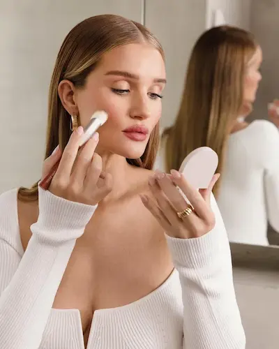
Пошаговый макияж для жирной кожи
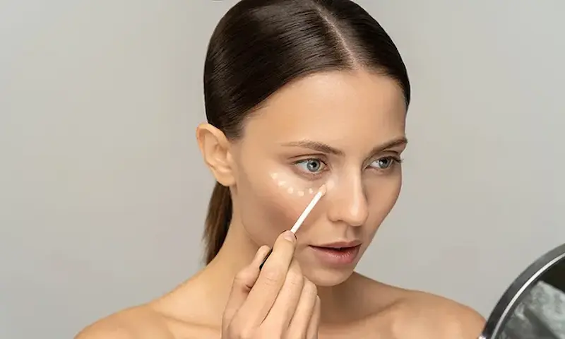
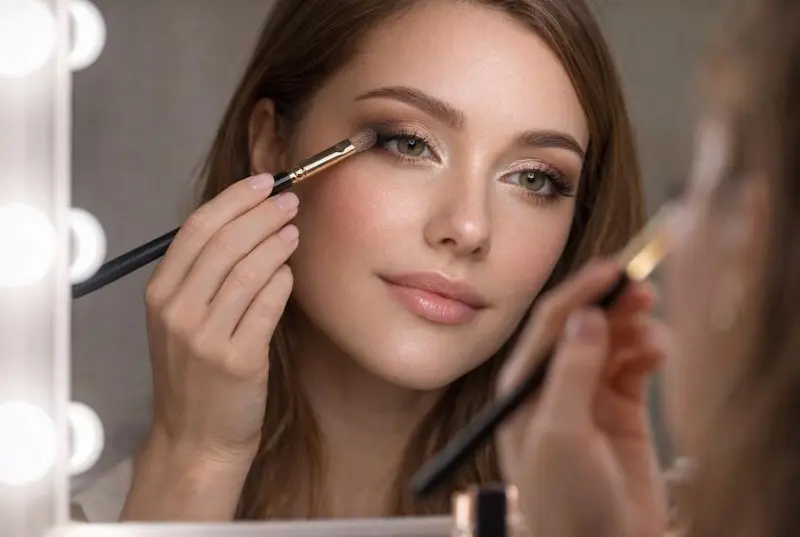
Макияж для жирной кожи строится на контроле блеска, лёгких слоях и хорошей фиксации, чтобы кожа выглядела матовой, но живой.
Праймер
Используйте матирующий праймер, особенно в Т-зоне. Он уменьшает выделение себума и продлевает стойкость макияжа.
Тон
Выбирайте лёгкие или средние текстуры с матовым или полуматовым финишем. Избегайте слишком плотных средств.
Консилер
Используйте точечно для коррекции. Не перегружайте кожу — это может усилить жирный блеск.
Фиксация пудрой
Закрепите макияж рассыпчатой пудрой, уделяя внимание Т-зоне. Это ключевой шаг для стойкости.
Румяна и скульптор
Лучше выбирать сухие текстуры — они дольше держатся и не усиливают жирный блеск.
Фиксирующий спрей
Завершите макияж матирующим фиксатором — он закрепит результат и продлит стойкость на весь день.
Идеальный макияж для жирной кожи — это тонкие слои, матовость и правильная фиксация без перегрузки.
Почему макияж для жирной кожи быстро портится (и как это исправить)
- избыток себума — кожа быстро начинает блестеть
- отсутствие матирующей базы
- слишком плотный тон, который «сползает»
- недостаточная фиксация пудрой или спреем
- использование кремовых текстур без закрепления
Основная причина — неправильный баланс между уходом и макияжем. Жирная кожа нуждается не в «перекрытии», а в контроле.
Чтобы макияж держался дольше:
- используйте матирующие праймеры
- наносите тон тонкими слоями
- фиксируйте Т-зону пудрой
- избегайте тяжёлых кремовых текстур
- держите матирующие салфетки под рукой
Правильная техника позволяет сохранить матовый, свежий и аккуратный вид кожи даже в течение длительного дня.
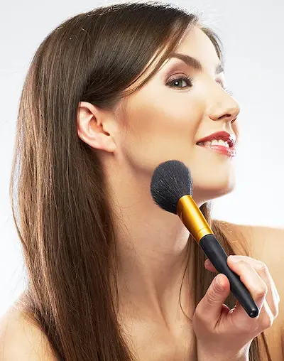
Топ средств для макияжа жирной кожи
Жирная кожа требует матирующих текстур, контроля себума и высокой стойкости: лёгкие базы, стойкие тональные средства и фиксирующие продукты.
Независимый обзор. Продукты не спонсируются.
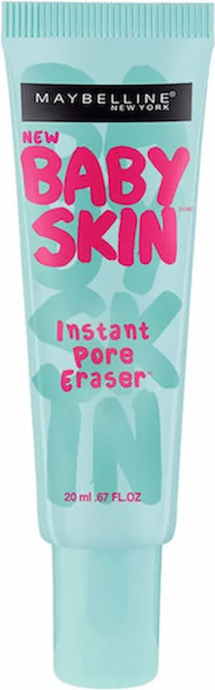
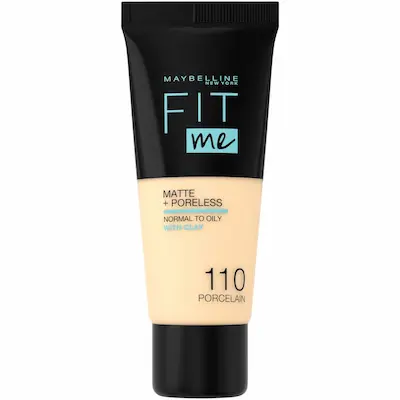
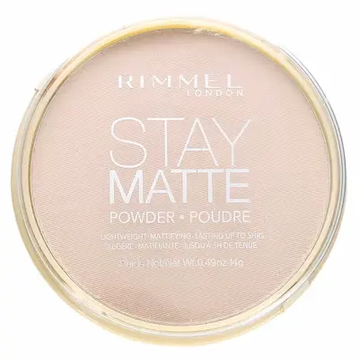
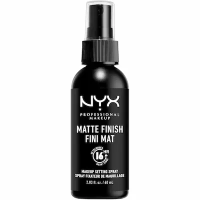
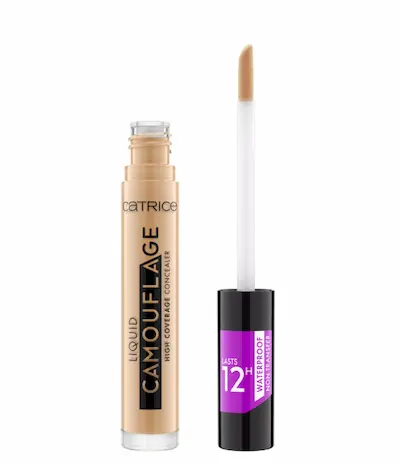
Бюджетный набор для макияжа жирной кожи (до 500 MDL)
💡 Общая стоимость набора: ~380–500 MDL
Независимый обзор. Подбор основан на стойкости продуктов и их доступности в Молдове.
✔ Контроль жирного блеска ✔ Стойкость макияжа до 10–14 часов ✔ Минимальный набор без перегрузки кожи
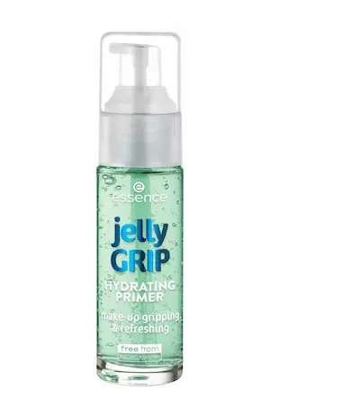

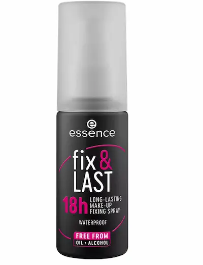
Этот набор подобран специально для жирной кожи: матирующий праймер, лёгкий тон и фиксирующие средства помогают контролировать блеск и сохранять макияж свежим в течение всего дня без эффекта перегруженности.
Макияж для жирной кожи быстро «плывёт»?
Жирная кожа чаще всего приводит к тому, что макияж начинает блестеть, скатываться и терять стойкость уже через несколько часов.
Это происходит не из-за косметики как таковой, а из-за избыточного себума (кожного жира), неправильной подготовки кожи и отсутствия фиксации.
Запишитесь к профессиональному визажисту и получите стойкий макияж для жирной кожи, который держится весь день без жирного блеска, пятен и «поплывшего» тона.
Записывайтесь на макияж.

Частые вопросы о макияже для жирной кожи
Почему макияж на жирной коже быстро «плывёт»?
Основная причина — избыточное выделение кожного сала. Оно разрушает стойкость тональной основы и делает кожу блестящей уже через несколько часов.
Как подготовить жирную кожу перед макияжем?
Нужно использовать мягкое очищение, лёгкий увлажняющий крем, матирующий праймер и обязательно дать каждому слою впитаться.
Какие тональные средства лучше для жирной кожи?
Лучше всего подходят матовые или semi-matte тональные кремы с long-wear формулой, которые контролируют блеск и не перегружают кожу.
Нужно ли использовать пудру?
Да, особенно в Т-зоне. Пудра помогает закрепить макияж и уменьшить жирный блеск в течение дня.
Как сделать макияж стойким на жирной коже?
Используйте праймер, тонкий слой тонального крема, фиксирующую пудру и спрей-фиксацию. Также важно не перегружать кожу продуктами.
Можно ли полностью убрать жирный блеск?
Полностью — нет, но можно значительно контролировать его с помощью правильного ухода и макияжа. Небольшой естественный блеск — это нормально.